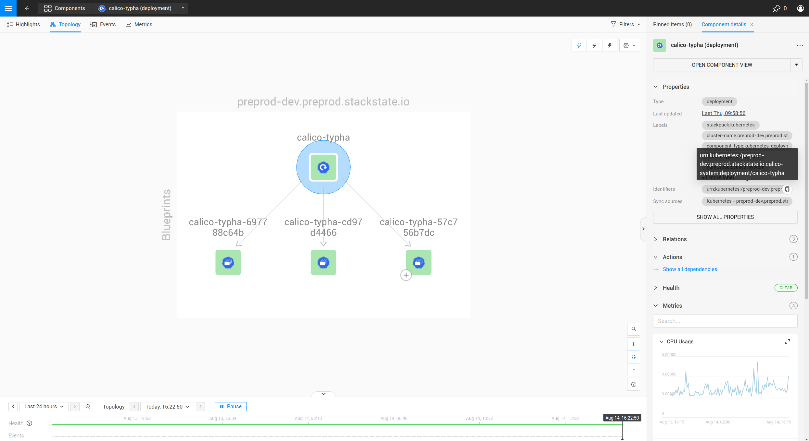

|
Este documento ha sido traducido utilizando tecnología de traducción automática. Si bien nos esforzamos por proporcionar traducciones precisas, no ofrecemos garantías sobre la integridad, precisión o confiabilidad del contenido traducido. En caso de discrepancia, la versión original en inglés prevalecerá y constituirá el texto autorizado. |
Añadir un monitor de umbral a los componentes utilizando la CLI
Descripción general
SUSE Observability proporciona monitores listos para usar, que ofrecen monitoreo de problemas comunes que pueden ocurrir en un clúster de Kubernetes. También es posible configurar monitores personalizados para las métricas recopiladas por SUSE Observability o métricas de aplicaciones ingeridas desde Prometheus.
Pasos
Pasos para crear un monitor:
Como ejemplo, los pasos añadirán un monitor para el Replica counts de las ampliaciones de Kubernetes.
Escribe el esquema del monitor
Crea un nuevo archivo YAML llamado monitor.yaml y añade esta plantilla YAML para crear tu propio monitor. Ábrelo en tu editor de código favorito para modificarlo a lo largo de esta guía. Al final, se utilizará la CLI de SUSE Observability para crear y actualizar el monitor en SUSE Observability.
nodes:
- _type: Monitor
arguments:
metric:
query:
unit:
aliasTemplate:
comparator:
threshold:
failureState:
urnTemplate:
titleTemplate:
description:
function: {{ get "urn:stackpack:common:monitor-function:threshold" }}
identifier: urn:custom:monitor:...
intervalSeconds: 30
name:
remediationHint:
status:
tags: {}
Los campos en esta plantilla son:
-
_type: SUSE Observability necesita saber que esto es un monitor, por lo que el valor siempre debe serMonitor -
query: Una consulta PromQL. Utiliza el explorador de métricas de tu instancia de SUSE Observability, http://your-instance/#/metrics, y utilízalo para construir la consulta para la métrica de interés. -
unit: La unidad de los valores en la serie temporal devuelta por la consulta o consultas, utilizada para renderizar el eje Y del gráfico. Consulta la referencia de unidades soportadas para todas las unidades. -
aliasTemplate: Un alias para las series temporales en el gráfico de métricas. Esta es una plantilla que puede sustituir etiquetas de la serie temporal utilizando el marcador de posición${my_label}. -
comparator: Elige uno de LTE/LT/GTE/GT para comparar el umbral con la métrica. Las series temporales para las que<metric> <comparator> <threshold>es verdadero producirán el estado de fallo. -
threshold: Un umbral numérico para comparar. -
failureState: Ya sea "CRÍTICO" o "DESVIADO". "CRÍTICO" se mostrará en rojo en SUSE Observability y "DESVIADO" en naranja, para denotar diferentes severidades. -
urnTemplate: Una plantilla para construir el urn del componente al que un resultado del monitor estará vinculado a. -
titleTemplate: Un título para el resultado de un monitor. Debido a que múltiples resultados de monitor pueden vincularse al mismo componente, es posible sustituir etiquetas de series temporales utilizando el marcador de posición${my_label}. -
description: Una descripción del monitor. -
function: Una referencia a la función de monitor que ejecutará el monitor. Actualmente, sólo se admite{{ get "urn:stackpack:kubernetes-v2:shared:monitor-function:threshold" }}. -
identifier: Un identificador de la formaurn:custom:monitor:….que identifica de manera única el monitor al actualizar su configuración. -
intervalSeconds: El intervalo en el que se ejecuta el monitor. Para métricas en tiempo real regulares, se aconsejan 30 segundos. Para consultas de métricas analíticas de larga duración, se recomienda un intervalo mayor. -
name: El nombre del monitor -
remediationHint: Una descripción de lo que el usuario puede hacer cuando el monitor falla. El formato es markdown, con el uso opcional de variables de handlebars para personalizar la pista en función de series temporales u otros datos (más explicación a continuación). -
status: Ya sea"DISABLED"o"ENABLED". Determina si el monitor se ejecutará o no. -
tags: Añade etiquetas al monitor para ayudar a organizarlas en la vista general de monitores de tu instancia de SUSE Observability, http://your-SUSE Observability-instance/#/monitors
Por ejemplo, este podría ser el inicio de un monitor que supervisa las réplicas disponibles de una ampliación:
nodes:
- _type: Monitor
arguments:
metric:
query: "kubernetes_state_deployment_replicas_available"
unit: "short"
aliasTemplate: "Deployment replicas"
comparator: "LTE"
threshold: 0.0
failureState: "DEVIATING"
urnTemplate:
description: "Monitor whether a deployment has replicas.
function: {{ get "urn:stackpack:kubernetes-v2:shared:monitor-function:threshold" }}
identifier: urn:custom:monitor:deployment-has-replicas
intervalSeconds: 30
name: Deployment has replicas
remediationHint:
status: "ENABLED"
tags:
- "deployments"
El urnTemplate y el remediationHint se completarán en los siguientes pasos.
Vincula los resultados del monitor a los componentes correctos
Los resultados de un monitor deben estar vinculados a componentes en SUSE Observability, para ser visibles y utilizables. El resultado de un monitor está vinculado a un componente utilizando el componente identifiers. Cada componente en SUSE Observability tiene uno o más identificadores que identifican de manera única al componente. Para vincular un resultado de un monitor a un componente, es necesario proporcionar el urnTemplate. El urnTemplate sustituye las etiquetas en las series temporales del resultado del monitor en la plantilla, produciendo un identificador que coincide con un componente. Esto se ilustra mejor con el siguiente ejemplo:
La métrica que se utiliza en este ejemplo es la métrica kubernetes_state_deployment_replicas_available. Ejecuta la métrica en el explorador de métricas para observar qué etiquetas están disponibles en la serie temporal:

En la tabla anterior se muestra que la métrica tiene etiquetas como cluster_name, namespace y deployment.
Debido a que la métrica se observa en ampliaciones, es más lógico vincular los resultados del monitor a componentes de ampliación. Para hacer esto, es necesario entender cómo se construyen los identificadores para las ampliaciones:
-
En la interfaz de usuario, navega a la vista
deploymentsy selecciona una única ampliación. -
Abre la vista
Topologyy haz clic en el componente de ampliación. -
Al expandir el
Propertiesen el panel derecho de la pantalla, los identificadores se mostrarán al pasar el ratón, como se muestra a continuación:

El identificador se muestra como urn:kubernetes:/preprod-dev.preprod.stackstate.io:calico-system:deployment/calico-typha. Esto muestra que el identificador se construye en base al nombre del clúster, el espacio de nombres y el nombre de la ampliación. Sabiendo esto, ahora es posible construir el urnTemplate:
...
urnTemplate: "urn:kubernetes:/${cluster_name}:${namespace}:deployment/${deployment}"
...
Para verificar si el urnTemplate es correcto, se explica más adelante.
Escribe la sugerencia de remediación
La sugerencia de remediación está ahí para ayudar a los usuarios a encontrar la causa de un problema cuando se activa un monitor. La sugerencia de remediación está escrita en markdown. También es posible utilizar las etiquetas que están en la serie temporal del resultado del monitor utilizando una plantilla de handlebars, como en el siguiente ejemplo:
...
remediationHint: |-
To remedy this issue with the deployment {{ labels.deployment }}, consider taking the following steps:
1. Look at the logs of the pods created by the deployment
...
Crea o actualiza el monitor en SUSE Observability
Después de completar el monitor.yaml, utiliza el SUSE Observability CLI para crear o actualizar el monitor:
sts monitor apply -f monitor.yamlVerifica si el monitor produce los resultados esperados, utilizando los pasos a continuación.
|
El identificador se utiliza como la clave única de un monitor. Cambiar el identificador creará un nuevo monitor en lugar de actualizar el existente. |
El comando sts monitor tiene más opciones; por ejemplo, puede listar todos los monitores:
sts monitor listPara eliminar un monitor, utiliza
sts monitor delete --id <id>Para editar un monitor, edita el original del monitor que se aplicó y aplícalo de nuevo. O hay un comando sts monitor edit para editar el monitor configurado directamente en la instancia de SUSE Observability:
sts monitor edit --id <id>El <id> en este comando no es el identificador, sino el número en la columna Id de la salida sts monitor list.
Habilita o deshabilita el monitor
Un monitor puede ser habilitado o deshabilitado. Habilitado significa que el monitor producirá resultados, deshabilitado significa que suprimirá toda salida. Utiliza los siguientes comandos para habilitar/deshabilitar:
sts monitor enable/disable --id <id>Verificando los resultados de un monitor
Es una buena práctica, después de crear un monitor, validar si produce el resultado esperado. Se pueden seguir los siguientes pasos:
Verifica la ejecución del monitor
Ve a la página de resumen del monitor (http://tu instancia de SUSE Observability/#/monitors) y encuentra tu monitor.
-
Verifica que la columna
Statusesté en estadoEnabled. Si el monitor está en estadoDisabled, habilítalo. Si el estado está enErrorestado, sigue los pasos a continuación para depurar. -
Verifica que veas la cantidad esperada de estados en la columna
Clear/Deviating/Critical. Si el número de estados es significativamente menor o mayor que la cantidad de componentes que pretendías monitorear, la consulta PromQL podría estar dando demasiados resultados.
Verifica la vinculación del monitor
Observa si el monitor está produciendo un resultado en uno de los componentes que se supone que debe monitorear. Si el monitor no aparece, sigue estos pasos para solucionarlo.
Problemas comunes
El resultado del monitor no se muestra en un componente
Primero verifica si el monitor está realmente produciendo resultados. Si este es el caso pero los resultados del monitor no aparecen en los componentes, podría haber un problema con la vinculación. Primero utiliza el siguiente comando para verificar:
sts monitor status --id <id>Si la salida tiene Monitor health states with identifier which has no matching topology element (<nr>): …., esto indica que el urnTemplate puede no generar un identificador que coincida con la topología. Para remediar esto revisita tu urnTemplate.